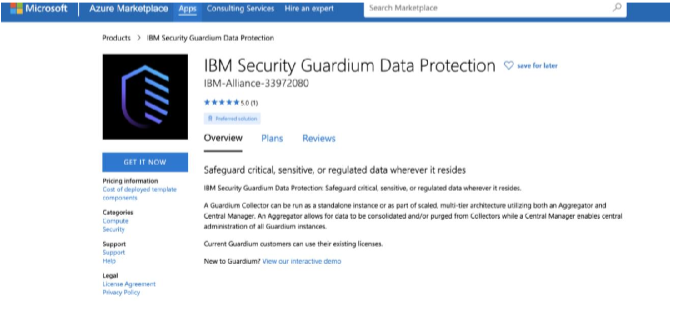

Método 1: Modelo de Solução Guardium
Método 1
1.Navegue até o IBM Guardium Multi-Cloud Data Protection (BYOL)
listagem no Microsoft Azure Marketplace.
2. Clique em Obtenha agora

3. Clique em Continuar
4. Clique em Criar para criar uma instância de VM do Guardium:
5. Defina as configurações básicas:
a. Selecione sua assinatura.
b. Crie um grupo de recursos ou selecione um existente.
c. Selecione a região da implantação da instância.
d. Digite o nome da sua máquina virtual.
e. Clique em Avançar para definir as configurações da máquina virtual.
6. Defina as configurações da máquina virtual:
a. Selecione o tamanho da VM.
b. Crie uma conta de armazenamento ou selecione uma existente.
c. Crie uma nova rede virtual ou selecione uma existente.
d. Configure uma sub-rede para a rede virtual.
e. Especifique um nome para o grupo de segurança de rede.
Observação: as portas 22 e 8443 são abertas por padrão para permitir SSH e
acesso à interface do usuário
f. Defina intervalos de IP ou CIDR de origem para limitar o acesso à VM.
Observação: isso pode ser modificado após a implantação, se necessário, por
modificando o grupo de segurança de rede.
g. Especifique um nome para o Conjunto de Disponibilidade.
h. Especifique o número de VMs que você gostaria de implantar.
i. Selecione a versão da instância do Guardium a ser implementada.
j. Selecione o tipo de unidade da instância a ser implantada.
k. Clique em Avançar para revisar e criar.
7. Depois que a validação for aprovada, clique em Criar para implantar a instância
8. Depois que a VM for implantada no Azure, defina o endereço IP privado como estático.
a. No Azure, vá para Máquinas Virtuais > Instância do Guardium >
Rede.
b. Selecione o nome da interface.
c. Clique em configurações de IP.
d. Clique no nome da configuração de IP.
e. Defina a atribuição como estático.
f. Clique em Salvar
9. Depois que a VM for implantada no Azure, defina o IP público como estático, se
aplicável
a. No Azure, vá para Máquinas Virtuais > Instância do Guardium >
Rede.
b. Clique no IP público.
c. Clique em Configuração.
d. Defina a atribuição como estático.
e. Clique em Salvar.
Observação: a VM pode ser reinicializada neste estágio.
10. Para abrir uma conexão SSH, SSH como usuário cli.
Observação: a senha padrão é guardium. Você é solicitado a alterar
sua senha no primeiro acesso.
11. Para conectar-se à IU do Guardium, use a URL https://
Método 2 Guardium VHDs
Método 2
Antes de prosseguir com as etapas abaixo, instale o Azure PowerShell 1.0 (ou
mais tarde) e a ferramenta AzCopy.
As URLs VHD públicas incluídas aqui contêm o caminho do contêiner de origem
seguido pelo nome do VHD.
https://guardiumv113images.blob.core.windows.net/aggregator/Guardium_v113_Aggregator.vhd
https://guardiumv113images.blob.core.windows.net/collector/Guardium_v113_Collector.vhd
1. Acesse https://portal.azure.com
2. No menu, clique em Contas de armazenamento.
3. Crie uma conta de armazenamento de destino.
a. Clique em Adicionar.
b. Especifique uma conta de armazenamento válida e um nome de grupo de recursos.
Nota: Todos os outros campos podem ser personalizados conforme necessário.
c. Clique em Criar.
4. Acesse a página Contas de armazenamento e verifique se a conta de armazenamento
foi criado com sucesso.
5. Crie um contêiner de destino.
a. Clique no nome da conta de armazenamento.
b. Clique em Blobs.
 c. Na página do serviço Blob, adicione um Container.
d. Defina um nome de contêiner válido e defina o tipo de acesso como Privado.
e. Verifique se o contêiner foi criado com sucesso.
6. Recupere o URL da conta de armazenamento de destino e a chave de acesso.
a. Na página do serviço Blob, clique no nome do contêiner de destino.
b. Clique em Propriedades.
c. Copie o URL do contêiner de destino e armazene-o em um local seguro
local para uso posterior.
d. Volte para a conta de armazenamento de destino e clique em Acessar
chaves.
e. Copie as chaves de acesso e guarde-as em um local seguro para
uso posterior.
7. Crie uma cópia do arquivo VHD blob no contêiner de destino.
a. Abra o Windows Powershell.
b. CD para o diretório onde o comando azcopy.exe está localizado.
c. Execute o seguinte comando do Powershell com o seguinte
mudanças:
• Substitua
c. Na página do serviço Blob, adicione um Container.
d. Defina um nome de contêiner válido e defina o tipo de acesso como Privado.
e. Verifique se o contêiner foi criado com sucesso.
6. Recupere o URL da conta de armazenamento de destino e a chave de acesso.
a. Na página do serviço Blob, clique no nome do contêiner de destino.
b. Clique em Propriedades.
c. Copie o URL do contêiner de destino e armazene-o em um local seguro
local para uso posterior.
d. Volte para a conta de armazenamento de destino e clique em Acessar
chaves.
e. Copie as chaves de acesso e guarde-as em um local seguro para
uso posterior.
7. Crie uma cópia do arquivo VHD blob no contêiner de destino.
a. Abra o Windows Powershell.
b. CD para o diretório onde o comando azcopy.exe está localizado.
c. Execute o seguinte comando do Powershell com o seguinte
mudanças:
• Substitua